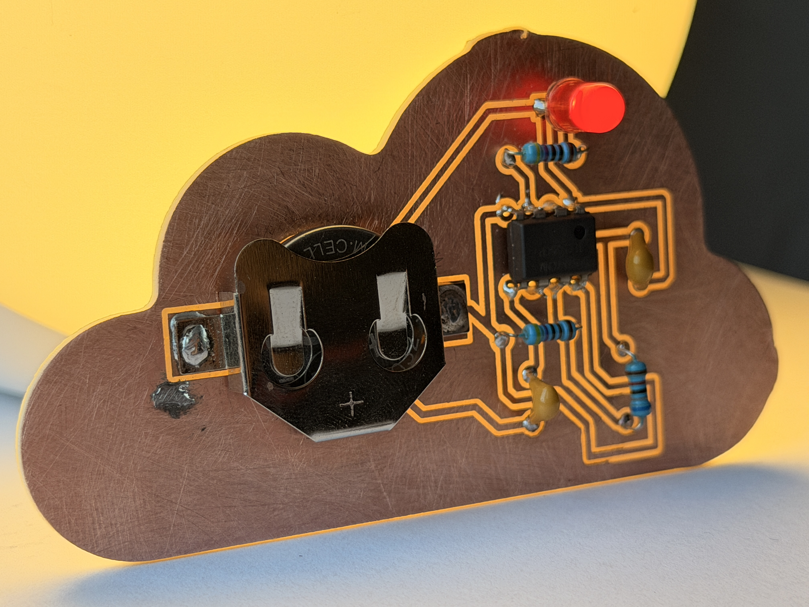
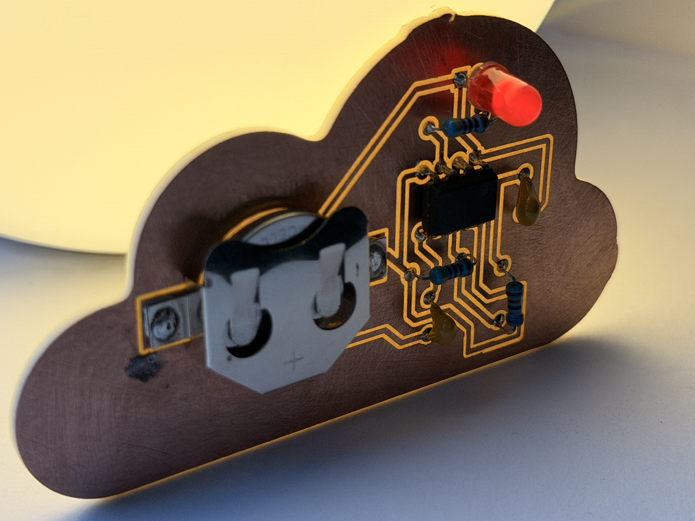
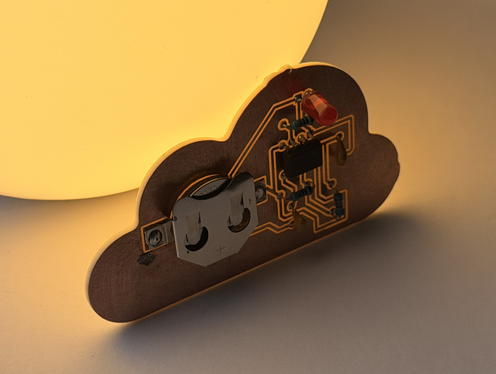
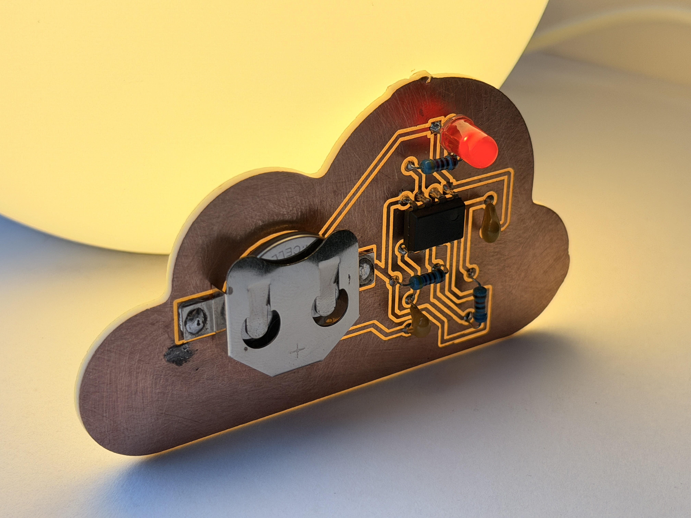
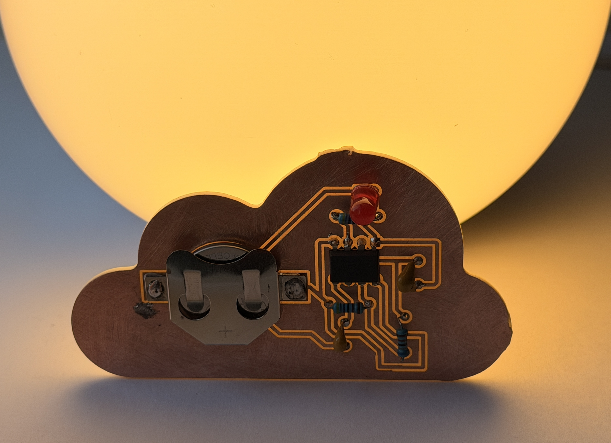
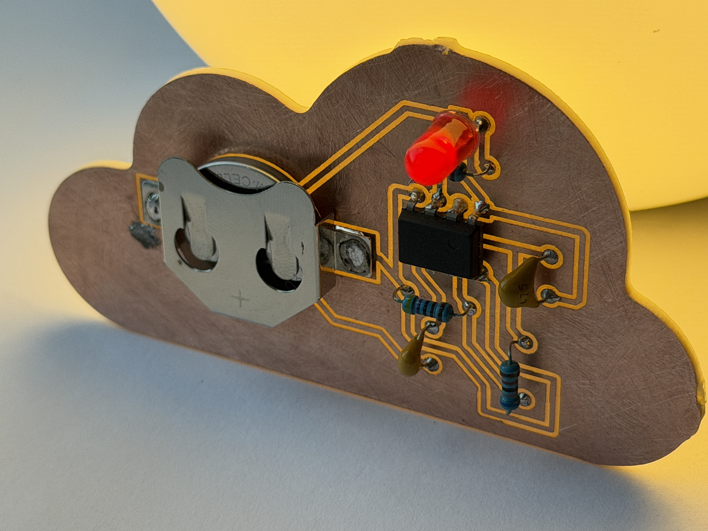
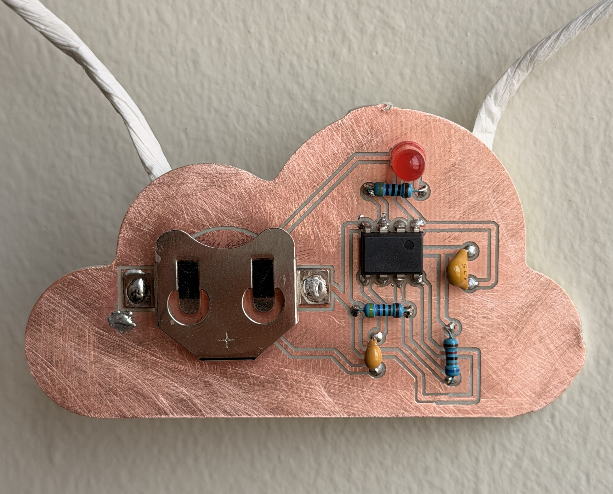
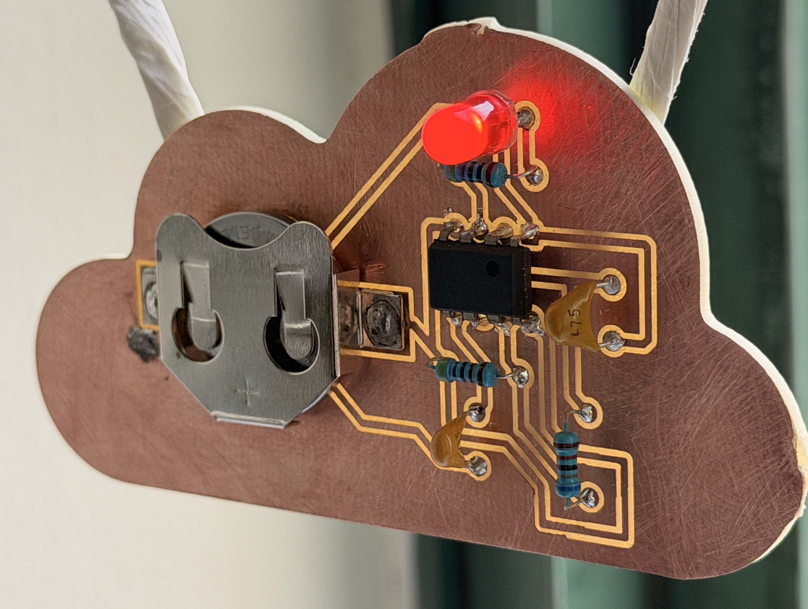
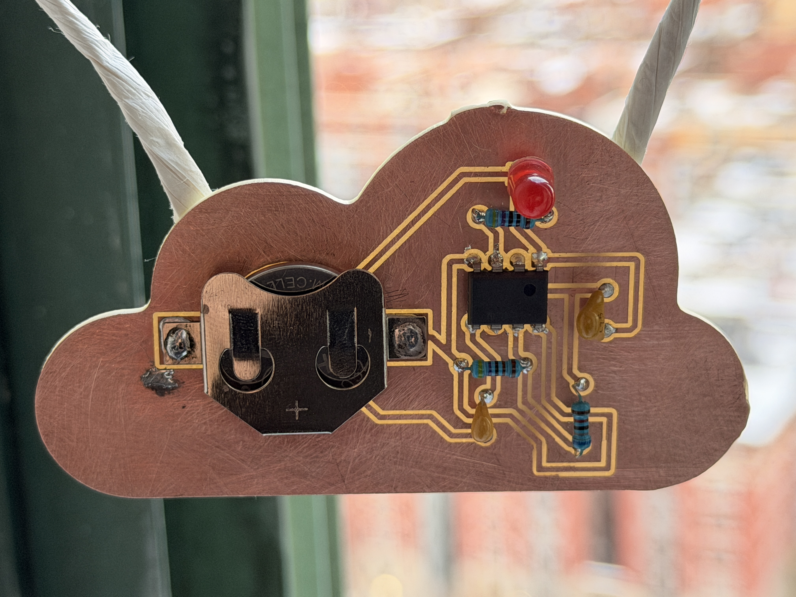

the title of my piece is "mr. heartman". i chose this title because i was attempting to create a heart shape with my brass rod,
but ultimately ended up playing with the rod too much to the point where the rod was genuinely unsalvagable. but rather
than feel disappointed, i decided to embrace the awkward lines and unbendable rod and make the heart
some shoes. i wanted this piece to reflect the love i have for my friends and my family (hence the awkwardly placed trinkets).
however, by the end of the soldering process (my very first soldering project by the way), i want it to also represent the love
i have for learning. learning how to solder reminded me that learning does not stop when you become a senior and secure a full-time job,
but that learning will always be a constant love in my life. so, hopefully mr. heartman will become the start of many paths of love for me!
(btw: i hope you enjoy the mini photoshoot i had for him, i really tried bringing out whatever artistry i had left in me)
assignment #2: pcb pendant - 'wandering'
photos ⋆˚✿˖°









creative vision °❀⋆.ೃ࿔*
the title of my second piece is ‘wandering’! i chose this title for a few reasons – the first one being that the shape of my piece is a
cloud (i guess clouds wander in the sky?). i was looking out the window after class last thursday (2/5/26) and thought it would be a
perfect shape for one of my first ever art pieces in the class. at the beginning of this project, i wanted this piece to represent the
fact that my interests are allowed to wander in life, whether in art or computer science.
however, by the end of the project, i think the name ‘wandering’ took on a different meaning. this piece let me wander through the joys and pains of
trying things for the first time, including making mistakes and accepting them. for example, there is a small glob of solder to the left of my battery
from when i tried (and failed) using a solder sucker for the first time. when this happened, i was legitimately heartbroken. i felt like my project
was so ugly (lol) and that i failed at perfecting it first try. after getting over my initial (dramatic) emotions, i decided to look at my glob as
proof of my immense effort to get my project to work. it symbolized the frustrating hour and a half it took to solder the battery holder and everything
else (just for the holder to fall right off). i let go of the notion that a scratchless, solder-less board was the goal of the project, and decided to
leap right in and sandpaper the entire thing (hence the massive scratches all over). to me, this project reminds me of how effort is more important
than perfection (very corny i know), and that all that matters is that im finally starting to create something new!! ٩(｡•́‿•̀｡)۶
the title of my third piece would be "who am i?". i was brainstorming the vision behind this piece when i was going through a bit of a crisis about
graduating - am i who i wanted to be 4 years ago? am i kind? am i confident? after learning about generative art in class and how 'randomness' plays
a key role, i was reminded of how chaotic thinking about yourself is. you have so many thoughts coming in at once, and you start to question everything
around you at hyperspeed. because the display screen was so small, i wanted to make an impact on whoever sees my art installation with something that made
them think. this line of reasoning led to this existential / questioning / thinking piece, which was further solidifed when i started playing with randomness
on my ESP32. the first iteration of my project would just be moving words across the screen, which reminded me of how thoughts come and go inside my mind.
once i made the decision to follow my vision, i made it so my piece randomly alternates between questions and shifts the answers on and off the screen. in terms
of technical challenges when developing with my hardware, i had difficulty with the question & word transitions and orchestrating "shared word" persistence,
which required mapping identical strings between questions and calculating precise paths so persistent words shift smoothly to new coordinates while
others animate around them.
installation video + more detailed video of art ˚ ༘ ೀ⋆｡˚
the title of my fourth piece would be "my singing tree", and it's probably my favorite project out of the
4 assignments so far. the vision behind this tree came about pretty close to the deadline, and i only
thought about it when i was bored on my phone. at first, my vision was to create a physical model of a
tree accompanied by a virtual one - whenever a user would tap on a branch, an apple would fall or a branch
would get cut off. i liked this idea, but i honestly didn't really want to do anything visual for this
project (i much preferred playing around with sound!). about a week before this project was due (sorry Professor),
i was talking to my friend at dinner and started playing around with games on my phone to show her how little storage
i have. i opened my singing monsters (a game where monsters quite literally just sing lol) and immediately
thought of the idea about bringing the song interface on the app to life. even though the game doesn't really
relate to trees (although it does have a plant island!), i decided to make my project a physical 'my singing monsters'
music mixer so i could play with the game sounds physically. one decision i took during this project was that
rather than using copper tape, i would be using brass rods. the use of brass rods in general was originally
an idea from Professor Santolucito, and i saw the vision in using them for my trunks or branches. i created my
physical model using wooden sticks and cardboard, and 3d printed the tree base for more stability. overall,
i would say the biggest headache in this assignment was connecting the brass rods to the wires, and then the wires
to the hidden breadboard at the bottom of the structure. the wires were either too long or too short, and they
would ALWAYS disconnect from the breadboard. this tree took a lot of blood, sweat, and frustration, but it turned
out so good!!!